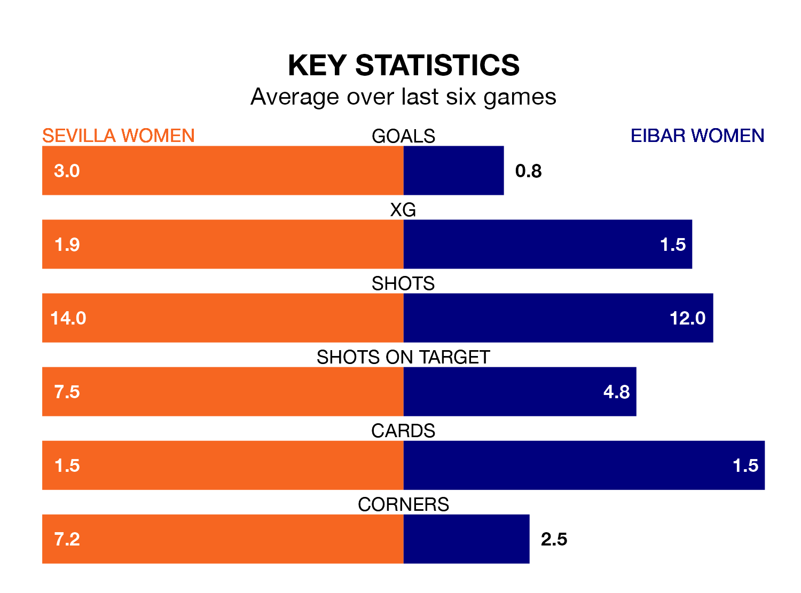

Struggling Eibar Women face Sevilla Women away at the Estadio Jesús Navas on Sunday looking to build on a win in their last league outing.
After securing all three points with a 1-0 victory over Valencia Women on January 21, Eibar sit 13th in Primera Division Women.
They travel to play a Sevilla side sixth in the standings, who also won their last match, 3-1 against Villarreal Women, on January 20.
With 10 goals in 14 games so far this season, Eibar are the league's joint-third-lowest scorers with 0.7 goals per game. And they are conceding more than average, letting in 29 goals at a rate of 2.1 per game.
Sevilla, meanwhile, are above average scorers, with 2.1 goals per game, compared to a league average of 1.6. They have conceded 1.9 goals per game.
The hosts are in fantastic form in Primera Division Women, with five wins and a draw from their last six games.
With three wins and three losses over that period, the away team's form is much worse – they have taken nine points from 18, compared to Sevilla's 16.
In Cristina Martín-Prieto Gutierrez, Sevilla have one of the league's most on-form strikers so far this season. She has notched eight goals in 14 appearances, to sit fourth in the scoring charts.
Her goal rate of one every 151 minutes is quicker than that of Andrea Abigail Alvarez Donis, Eibar's top scorer with a goal every 220 minutes, and a total of three goals in 12 games.
In the last five years, Sevilla and Eibar have played each other on four occasions. They won two each.
On average, Sevilla scored 2.2 goals and Eibar 1.5 in those matches.
Their last meeting was on March 26 2022, when Sevilla won 4-1 at home.
Updated: 09:07 (UTC), 24/01/24